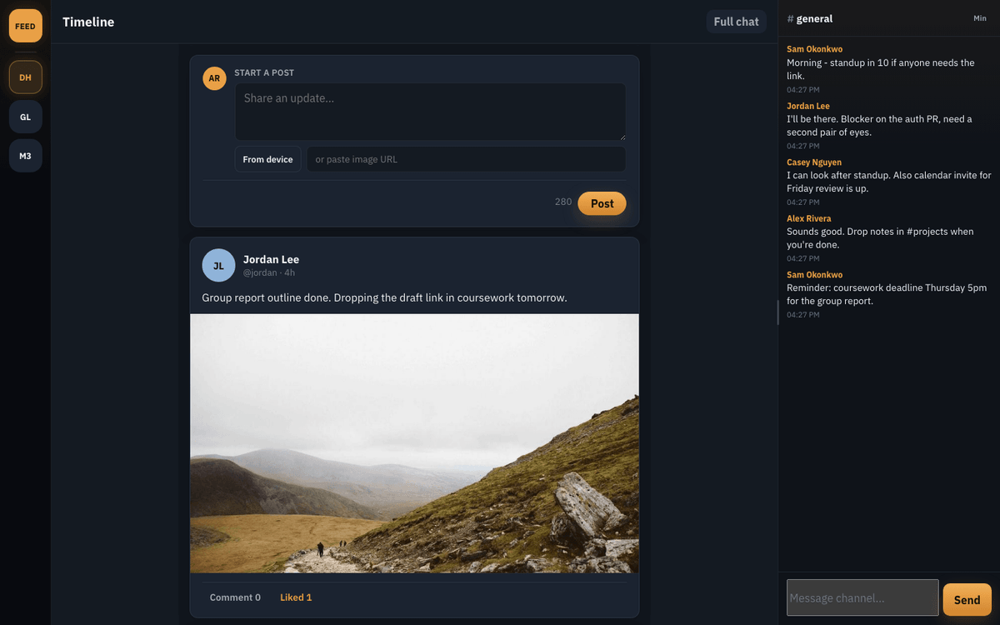

ChatWire
May 2026 · personal project



1. Purpose and tech stack
ChatWire is a real-time chat app with a Discord style layout. I built it after mostly doing request/response HTTP work, as a way to learn server push, auth, and permission checks outside of a banking context. The browser uses JSON HTTP for login and Socket.IO for live messages. Accounts and history live in SQLite.
| Layer | Choice | Reason |
|---|---|---|
| Server | Python, Flask, Flask-SocketIO | HTTP APIs plus live events on one process for a demo scale app |
| Data | SQLite | Simple persistence for users, messages, friends, feed |
| Auth | bcrypt + signed session tokens | Reconnect with a token, not the password |
| Client | HTML, CSS, JavaScript | Channel UI, DMs, feed, Ctrl+K switcher |
| Channel calls | Socket.IO + WebRTC (STUN) | Meet now presence plus optional mic/camera peer media |
| Presence | In memory | Online status changes often and need not survive restart |
2. Design (request path and live path)
Channel history loads once with cursor pagination (before_id /
has_more). New events append so switching rooms does not replay the whole
history. Unread counts and DM threads are stored in SQLite and pushed over sockets.
3. Features implemented
- Communities, channels, DMs, reactions, stories, friends, typing, edit / delete
- Channel calls: Meet now presence plus optional mic/camera (WebRTC, STUN only)
- Settings: theme, password, display name, notification sound, mic/camera allow
- Ctrl+K quick switcher between channels
- Admin rename gates for communities and channels
- Login lockout after repeated failures; same check on change password
- Rate limits on chat and social write paths
- Friends only feed and story views check the viewer is allowed before returning data
4. Folder structure
ChatWire/ ├── app.py # Flask routes (/api/auth/*, health) ├── sockets/ # live chat / social / feed events ├── db.py # schema + queries ├── state.py # online presence (memory) ├── throttle.py # per connection rate limits ├── validate.py # payload checks ├── static/ # UI ├── seed.py # optional sample data └── tests/ # pytest
5. Timescale
| Phase | When | Work |
|---|---|---|
| Auth and rooms | May 2026 | Register / login, communities, channels, basic messages |
| Live product features | May 2026 | DMs, reactions, typing, stories, presence |
| Calls and hardening | May 2026 | Call presence + WebRTC media, lockout, rate limits, permission checks, pytest |
| Deploy | May 2026 | Railway public demo |
6. Challenges and how they were handled
| Challenge | Approach |
|---|---|
| Reloading full history on every room switch | Load once, then append events; cursor pagination for older messages |
| Auth only on login | Signed tokens; ownership and friend checks on feed / stories / renames |
| Brute force on login or change password | Short account lockout after repeated failures |
| Spam on sockets | Per connection rate limits on write events |
| Presence scale | Keep online status in memory for demo scale; document JOIN batching for later |
7. Testing
From the ChatWire repo:
pip install -r requirements-dev.txt pytest -q
Manual checks:
- Two browsers: message in a channel appears live for both
- Non friend cannot open a friends only feed or story
- Non admin cannot rename a community or channel
- Failed logins trigger lockout; change password is covered by the same gate
- Reconnect with session token without retyping the password
8. Deployment and links
Local: venv, pip install -r requirements.txt, python app.py,
open http://localhost:5001. Optional python seed.py. Live demo is on Railway.
Demo login: demo / demo123456 (admin, so rename works in demos).